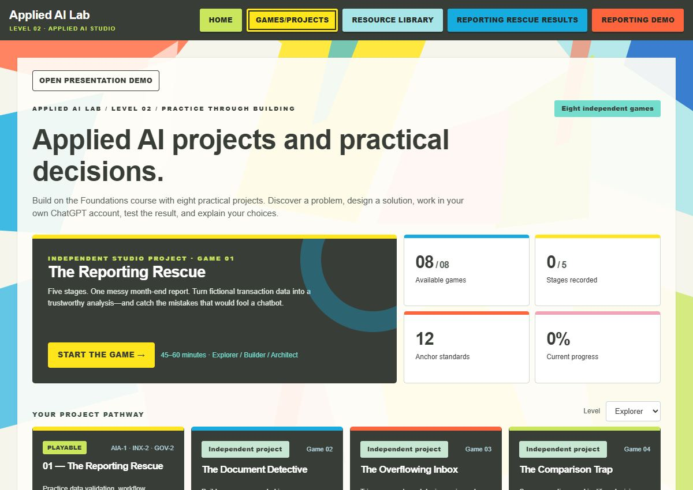

Case study · Learning design and implementation
Applied AI Lab
A learning project that moves from short lessons about AI to workplace scenarios where learners investigate a problem, test a workflow, and explain their decisions.
Overview
Foundations contains seven modules on AI capabilities, prompting, privacy, verification, human review, workflow design, and adoption. Studio adds eight workplace scenarios, with guided and more independent levels of practice.

The need
Knowing what an AI tool can do is different from knowing when to trust its output or how to use it responsibly in a workflow. I built the Lab to give learners practice with those decisions.
The goal was to make instruction, practice, reference material, and review available in one place, without requiring an account.
My role
I set the learning goals, sequenced the modules, designed the workplace scenarios, and defined review criteria. I directed development through testing and publication.
AI tools assisted with development. I reviewed the content and behavior, and learner testing informed revisions to navigation, instructional support, and progress saving.
Approach
- Start with specific decisions. Each Foundations activity asks learners to make a choice about evidence, privacy, review, or workflow design.
- Connect instruction to practice. Studio uses five stages—Discover, Design, Build, Break, and Explain—to take a workplace problem from investigation to a documented recommendation.
- Adjust the support. Explorer provides guidance; Builder reduces it; Architect asks learners to defend more of their choices independently.
- Make work recoverable. Browser progress saving and downloadable backups let learners return to their work.
Implementation
Reporting Rescue, Studio’s first scenario, includes a rule-based practice score. The remaining seven scenarios use written responses and evidence checklists for self-review. These are different kinds of practice, so the site identifies them clearly.

The applications run in the browser. Learners can save drafts, review attempts, download work, and restore progress from a backup. The reporting demonstration uses synthetic records.
Skills demonstrated
- Learning and program design: defined objectives, sequenced practice, and adjusted instructional support.
- Documentation and communication: wrote reference materials, activity instructions, and evidence checklists.
- Quality review: developed criteria, examined failures, and revised the experience after testing.
- Implementation: coordinated content, interface behavior, testing, and publication in a working browser-based project.
Results & limits
The published project includes seven Foundations modules and eight Studio scenarios, with progress saving, reference resources, and backup tools. Visitors can try the activities directly.
This is independent portfolio work. It does not represent a completed workplace pilot or a measured enterprise rollout. A workplace pilot would need a baseline and follow-up evidence of work quality, effort, and independent application.